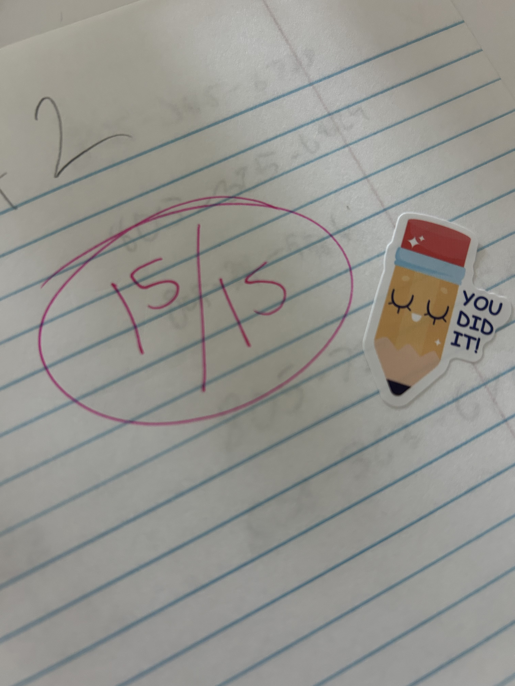
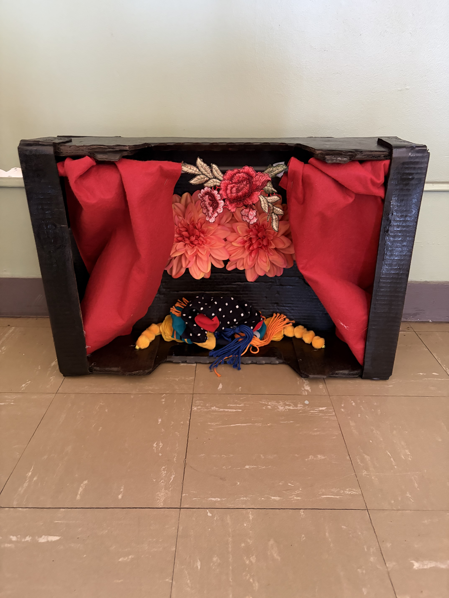

English
- 50 Minute Zoom Session- $20
- In Person Sessions in Santa Maria, CA- $30 (Meet at public library)
Accepted Payments: Zelle, Apple Pay, Venmo, Cash-only if in person session
Spanish & English Tutoring
Patient, encouraging lessons for students ages 12 and up — online or in Santa Maria, CA.


Hi everyone! My name is Gizelle Mincitar-Zhuang, and I am going into my second year of teaching. My main subject is beginner Spanish, but I enjoy working with students of all levels and adapting my teaching to meet each student’s individual needs and learning style.
I also have experience as a tutor, specifically working with Spanish I students over the past year. Before becoming a teacher, I spent two years working with emergent bilingual students, supporting them as they developed their English language skills.
I tend to tutor students with ages 12 and up, teaching adolescents and adults. I can make the exception to teach a child younger than 11 years old only if the sessions are in person.
My goal is to create a comfortable and encouraging learning environment where students can build their confidence, strengthen their language skills, and feel comfortable practicing at their own pace.
Feel free to reach out to me with questions about lessons! Let’s start your language learning journey together!
Ya sea que estés buscando un tutor de español o de inglés, ¡estoy aquí para apoyarte en tu camino de aprendizaje! Aprender un nuevo idioma puede abrirte las puertas a nuevas oportunidades, conexiones significativas y una mayor confianza en tu vida.
Generalmente, doy tutorías a estudiantes de 12 años en adelante, incluyendo adolescentes y adultos. Puedo hacer una excepción para estudiantes menores de 11 años, siempre y cuando las sesiones sean presenciales.
Enseño con paciencia, dedicación y mucho ánimo, creando un ambiente cómodo donde mis estudiantes puedan practicar, hacer preguntas y cometer errores sin sentirse avergonzados. Los errores son una parte natural del aprendizaje, y cada clase es una oportunidad para crecer y mejorar.
Sin importar tu nivel actual o tus metas, ¡estoy aquí para ayudarte a desarrollar tus habilidades y ganar confianza paso a paso!
Accepted Payments: Zelle, Apple Pay, Venmo, Cash-only if in person session
Precios:
Métodos de pago aceptados: Zelle, Apple Pay, Venmo y efectivo.
El pago en efectivo solo está disponible para sesiones presenciales.
By scheduling a tutoring session, students agree to the following policies:
Students are expected to attend each scheduled tutoring session on time. I understand that plans can change, so students are welcome to reschedule when needed. Please communicate any scheduling changes as soon as possible.
Tutoring services are primarily offered to students ages 12 and older, including adolescents and adults. Students ages 11 and younger may be accepted on a case-by-case basis; however, all tutoring sessions for this age group must be held in person. A parent or legal guardian must schedule and approve tutoring services for any student under the age of 18.
There is no cancellation fee for online tutoring sessions.
For in-person sessions, cancellations made 30 minutes or less before the scheduled meeting time will result in an $8 late cancellation fee. This fee helps account for the time and travel involved in preparing for an in-person session.
Payment is required by the start of each tutoring session. If payment is not received, I reserve the right to cancel the session.
Repeated failure to provide payment as required may result in the cancellation of future tutoring sessions and the discontinuation of tutoring services.
If you need to cancel or reschedule, please communicate with me as soon as possible. I am happy to work with students when unexpected situations arise.
By scheduling a session, you acknowledge and agree to these tutoring policies.
Al programar una sesión de tutoría, el estudiante acepta las siguientes políticas:
Se espera que los estudiantes asistan puntualmente a cada sesión de tutoría programada. Entiendo que los planes pueden cambiar, por lo que los estudiantes pueden reprogramar una sesión cuando sea necesario. Por favor, comunique cualquier cambio de horario lo antes posible.
Los servicios de tutoría están dirigidos principalmente a estudiantes de 12 años en adelante, incluyendo adolescentes y adultos. Los estudiantes de 11 años o menores pueden ser aceptados dependiendo de cada caso; sin embargo, todas las sesiones de tutoría para este grupo de edad deberán realizarse de manera presencial. Un padre, madre o tutor legal deberá programar y autorizar los servicios de tutoría para cualquier estudiante menor de 18 años.
No se cobra ninguna tarifa por cancelar sesiones de tutoría en línea.
Para las sesiones presenciales, las cancelaciones realizadas 30 minutos o menos antes de la hora programada tendrán un cargo de $8 por cancelación tardía. Este cargo ayuda a cubrir el tiempo y transporte necesario para preparar una sesión presencial.
El pago debe realizarse antes o al inicio de cada sesión de tutoría. Si no se recibe el pago, me reservo el derecho de cancelar la sesión.
El incumplimiento repetido de los pagos requeridos puede resultar en la cancelación de futuras sesiones y la suspensión de los servicios de tutoría.
Si necesita cancelar o reprogramar una sesión, por favor comuníquese conmigo lo antes posible. Con gusto trataré de ser flexible cuando surjan situaciones inesperadas.
Al programar una sesión, usted reconoce y acepta estas políticas de tutoría.
Feel free to reach out to me with questions about lessons! Let’s start your language learning journey together!